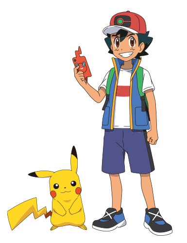
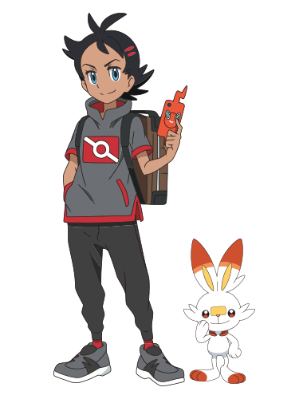
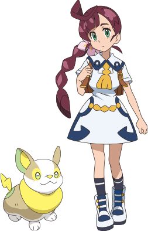

- 줄거리
- 등장인물
- 국내 방영정보
- 동영상
등장인물

한지우 (サトシ)
어떤 만남에서부터
포켓몬 배틀 최강을 노리는 10살 소년.
정의감이 강하고 올곧은 성격.
꿈은, 포켓몬 마스터가 되는 것.
피카츄
지우와 같이 모험을 하고 있는
최고의 파트너.
자신있는 기술은 10만볼트!

고우 (ゴウ)
어린 시절에 만났던,
환상의 포켓몬 "뮤"를 잡는 것을
목표로 하고 있는, 10살 소년.
침착한 성격이지만, 뜨거운 마음을 지녔다.
꿈은, 모든 포켓몬을 잡는 것.
염버니
킥을 특기로 삼고, 동료들을 생각하며 지기 싫어한다.
이상야릇한 일로, 고우와 운명적으로 만났다.

사쿠라기 박사 (サクラギ博士)
관동지방 갈색시티에 만들어진
사쿠라기 연구소의 소장인 포켓몬 박사
지우와 고우의 모험을 서포트하면서,
연구소에서 포켓몬 연구를 수행한다.

코하루 (コハル)
학교에 다니는 10세 여자아이
사쿠라기 박사의 딸로, 고우와는 소꿉친구
멍파치가 따르고 있다.
멍파치
강아지 포켓몬
호기심이 왕성하고 코하루를 정말 좋아한다.